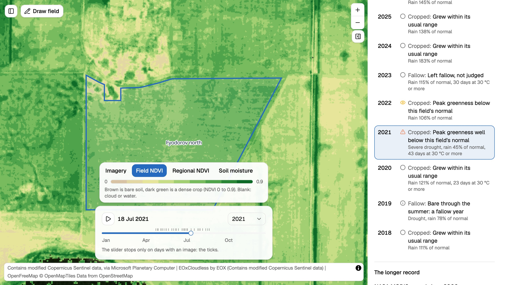
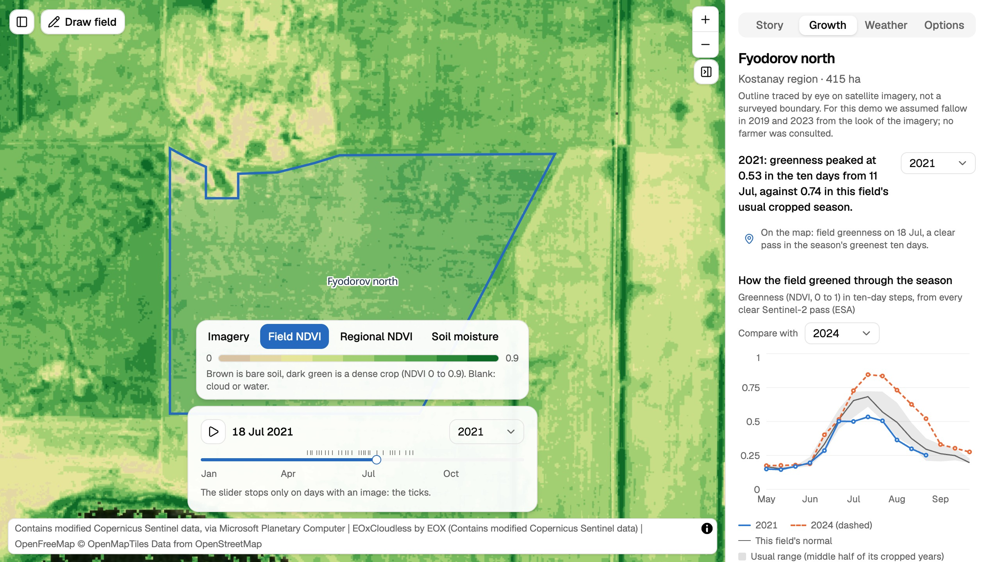
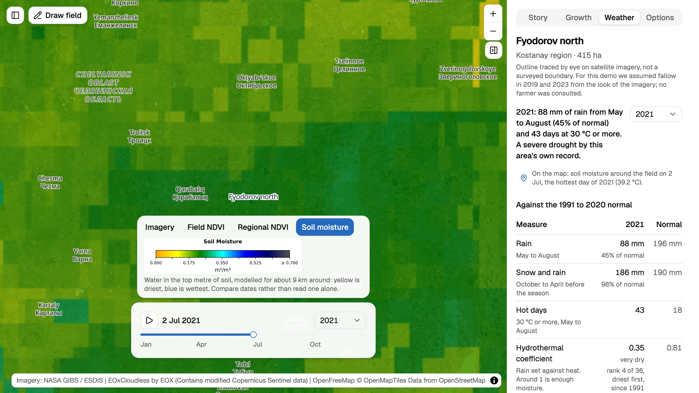
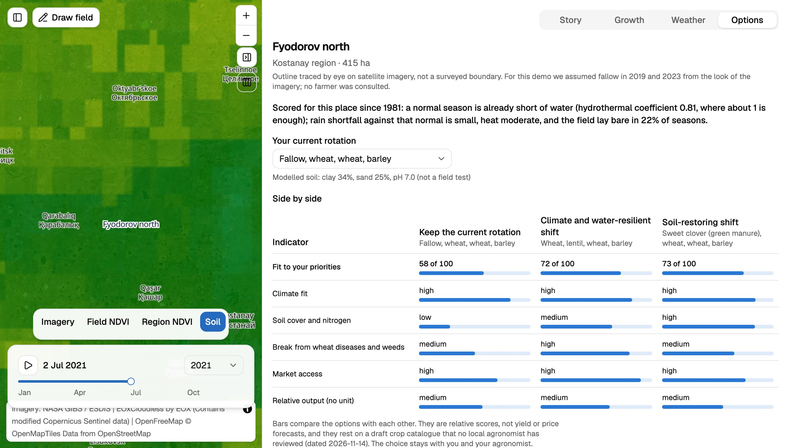

Pick a field: Croppy reads every season from space
NASA MODIS since 2000 · Sentinel-2 since 2018 · NASA POWER weather since 1981

NASA MODIS since 2000 · Sentinel-2 since 2018 · NASA POWER weather since 1981

Field greenness (NDVI) from every clear Sentinel-2 pass, brown bare soil to dark green dense crop
Each season is judged against the field's own normal, by fixed rules you can read

NASA POWER weather: a severe drought by this area's own record. NASA SMAP soil moisture on the map

Each with its evidence, what satellites cannot see, and what to check with a local agronomist
